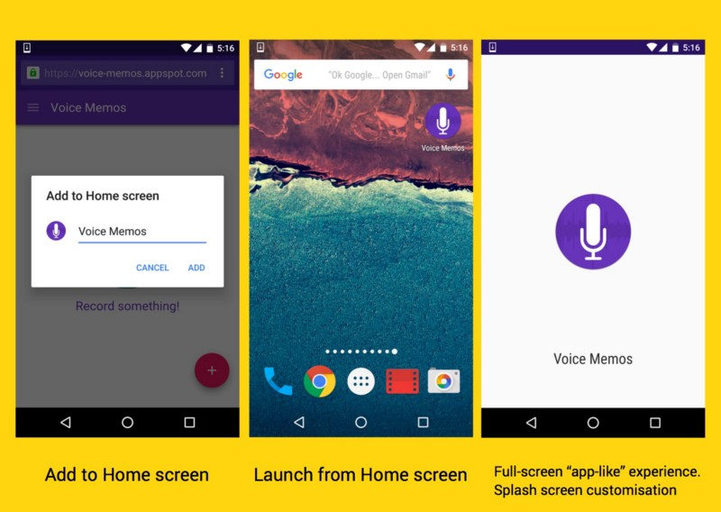

SPA and PWA เพราะหน้าเดียวก็เฟี้ยวได้
ปัจจุบัน เรามักได้ยิน คำว่า เว็บแบบ SPA บ่อยขึ้น แต่เชื่อว่า ยังมีอีกหลายคน ที่ยังไม่รู้ ว่ามันคืออะไร คำว่า SPA ในที่นี้ ไม่ใช่ยี่ห้อ ของสินค้า หรือ ชื่อบริการ แต่เป็นคำย่อ ที่มาจาก คำว่า Single Page Application ซึ่งเป็น เทคนิคการพัฒนาเว็บไซต์ ที่มีวิธีการทำงาน ในลักษณะ ใกล้เคียง กับ Application ที่ได้รับความนิยม เป็นอย่างมาก ในปัจจุบัน แล้วเว็บลักษณะนี้ มันต่างจากทั่วไป อย่างไร ? มีประโยชน์ยังไง ? ผมจะลองอธิบายให้ฟังครับ
เว็บแบบ SPA ต่างจากเว็บทั่วไปอย่างไร ?
สำหรับเว็บไซต์ โดยทั่วไป ที่เราใช้งาน ในปัจจุบัน เวลาคลิ้กดูข้อมูล หรือ เปลี่ยน URL หน้าเว็บจะ Reload เพื่อดึงข้อมูลใหม่ มาแสดง แต่เว็บแบบ SPA ได้รับการออกแบบ ให้ลดการ Reload หน้าเว็บ โดยไม่จำเป็น ซึ่งหน้าเว็บ ลักษณะนี้ เมื่อคลิ้กดูข้อมูล จะไม่ดึงข้อมูลมาใหม่ ทั้งหน้า แต่จะใช้ JavaScript ในการดึงข้อมูล เพียงบางส่วน เพื่อนำมา Update เฉพาะบริเวณ ที่จำเป็น
จากภาพด้านบน จะเห็นว่า เว็บทั่วไป (ภาพซ้ายมือ) เมื่อดึงข้อมูล หน้า about us มาแล้ว Browser จะ Redirect ไปที่ URL ใหม่ โดยอัตโนมัติ เพื่อแสดงข้อมูล ในขณะที่ เว็บแบบ SPA (ภาพขวามือ) เมื่อดึงข้อมูล หน้า about us มาแล้ว Browser ยังจะไม่เปลี่ยนหน้า แต่แสดงข้อมูล ในหน้าเดิม ส่งผลให้เว็บแบบ SPA มี User Experience ที่ดีกว่า สามารถตอบสนอง ได้รวดเร็ว เพราะเป็นการทำงาน แบบ Client Side (ทำงานบน Browser) ที่ควบคุมการแสดงผล ด้วย JavaScript เกือบทั้งหมด
ข้อดีของ SPA
- มี User Experience ที่ดีกว่า User ไม่ต้องรอนานเวลาโหลดหน้าใหม่
- ลดการทำงานของฝั่ง Server Server ไม่จำเป้นต้องทำการส่ง หน้า page มาใหม่ทุกครั้งทำหน้าที่แค่แลกเปลี่ยนข้อมูลกันบางส่วน
ข้อเสียของ SPA
- Security เนื่องจากการทำ SPA เป็นการทำงานบนหน้า html เพียงหน้าเดียว เราจะต้องคุม Security เองให้ดี ซึ่งไม่เหมือนกับการเขียนเว็บปกติที่เราสามารถพึ่งพา server ได้เต็มที่ หนึ่งในเรื่องนี้ก็แก้ได้โดยการใช้พวก token เช่น JWT, HMAC เป้นต้น
- SEO เนื่องจากการทำงานเป็นการใช้ javascript render ทำให้ bot ของ search engine ไม่สามารถอ่านเนื้อหาข้างในได้
- ไม่ support browser รุ่นเก่า สาเหตุที่ SPA ไม่ค่อยดังเนื่องจากปัญหา cross browser นี่หล่ะครับ บางคนก็ยังจำเป็นต้องใช้ browser เก่าถึงแม้ว่าจะมีการผลักดันจากเว็บใหญ่ๆ ให้ไปใช้ browser รุ่นใหม่ แต่ก็ยังไม่สามารถทำได้เนื่องจากมี web ที่ต้องใช้งานในองค์กรแล้วไม่ support browser รุ่นใหม่ๆ เป็นต้น
PWA เทรนที่น่าจับตามอง
เจ้านี่คือเทคโนโลยีที่จะทำให้เว็บของเราเนี่ย มีความใกล้เคียงกับ App ในมือถือมากขึ้น ทั้งความลื่นไหลในการใช้งาน, เข้าเมนูต่างๆอย่างง่ายดาย, การใช้งานเมื่ออยู่ใน Mode Offline, การทำ Push Notification ฯลฯ ในขณะเดียวกันก็เก็บข้อดีของเว็บไว้อาทิเช่น ความสดใหม่ของข้อมูล(อัพเดทกันได้ทันที ไม่ต้องไปอัพ App Store), ความเข้าถึงง่ายไม่ต้อง Install ให้ยุ่งยาก
วิธีลงเจ้า PWA นี่ก็ง่ายๆ แค่อยู่ในหน้าเว็บที่พัฒนาด้วย PWA แล้วกด Add To Home Screen….
เรียบร้อย! เราก็ได้ลง Progressive Web App ลงเครื่องของท่านแล้วครับ ทีนี้พอเราลองไปที่หน้า Homescreen ก็จะพบว่ามี Icon ของ Aliexpress สีแดงๆอยู่ ให้ท่านผู้อ่านลองกดเข้าไปปุ้ป ก็จะเห็นหน้า Splash Screen เก๋ๆ เป็นรูปโลโก้ App และ Background สีแดงฉาน เต็มจอ เก๋ๆ ตรงนี้เราก็จะเข้า App มาละครับ สังเกตว่าจะเป็น Feeling แบบ App ที่เราใช้กันเลย ไม่มี Address Bar ให้ยุ่งยาก รวมถึงสามารถกด Hamburger เมนูหรือไอ้เจ้าขีดสามขีดตรงซ้ายบน ให้โชว์เมนูออกมาได้อย่างสวยงาม
ถ้าคิดว่าหมดแค่นี้… ลองปิดอินเตอร์เน็ตในมือถือดู แล้วเข้า App อีกที… แต่น แต๊นนน สังเกตได้ว่าแอพยังทำงานได้ เมนูต่างๆยังอยู่ครบ เลยใช่ไหมครับ
ทำไมต้อง PWA
จากการวิจัยของ comScore Mobile Metrix พบว่าในปัจจุบัน ค่าเฉลี่ยของการโหลดแอพใหม่ลงมือถือต่อเดือนมันอยู่ที่ 0 แล้วจริงๆ ลองคิดง่ายๆครับว่าในมือถือที่เราใช้กันอยู่ เดือนๆนึงโหลดอะไรมาเพิ่มบ้าง รวมถึงใช้กันจริงๆ ทุกวันเนี่ยกี่แอพกัน (ในงานวิจัยบอกว่า 80% ของเวลาที่ใช้มือถือ ใช้อยู่แค่ 3 แอพหลักๆ เท่านั้นเอง)
ในขณะที่มาดูข้อมูลการใช้งานเว็บไซต์ พบว่าผู้ใช้มือถือในหนึ่งเดือน เข้าเว็บไซต์ต่างๆกว่า 100 เว็บไซต์ Google เลยบอกว่าปล่อยไว้อย่างงี้ไม่ได้ละ จึงปิ๊งไอเดีย จะมายกเครื่องเว็บไซต์ของเรากัน ภายใต้แนวคิด…
- Reliable - ไม่ใช่กดเปิด App ขึ้นมาแล้วเจอ Downasaur (ชื่อเล่นของตัวไดโนเสาร์ ที่เรามักเจอใน Chrome เวลาเน็ตขัดข้อง) ต้องทำงานได้แม้ในโหมด Offline
- Fast - มีงานวิจัยออกมาว่า Users กว่า 53% ถอดใจที่จะเข้าเว็บ หากเว็บใช้เวลาโหลดเกิน 3 วินาที ดังนั้นต้องทำไงก็ได้ ให้กดปุ้ปติดปั้ป พร้อมใช้งาน
- Homescreen เข้าถึงง่าย สามารถกด Icon App ได้จาก Home screen
- Immersive นักพัฒนาสามารถควบคุม Experience ของ User กำหนด รูปแบบหน้าตาของ App ว่าจะมี Address Bar ไหม เอาแนวตั้งแนวนอนได้
- Notification อันนี้หล่อ คือสามารถ Push Notification ให้ User ได้แบบ App เลยนั่นเอง
-
Engaging-แบ่งออกเป็น 3 หัวข้อย่อยๆ ได้แก่
เบื้องหลังการทำงานของ PWA
ในการทำให้เว็บของเราเป็น PWA นั้น ผมขอแบ่งพระเอกออกเป็น 2 คนหลักๆครับคือ ServiceWorker กับ Manifest.json
ServiceWorkerServiceWorker หรือ SW เอาง่ายๆคือไฟล์ Cilent-side proxy ที่เราเขียนขึ้นมาด้วย JavaScript นี่แหล่ะครับ พอ Users เข้ามาเว็บเรา เราก็จะทำการ Install เจ้า SW นี่ลงไปในเครื่องของ User คนนั้นๆ หน้าที่ของ SW ก็คือ กำหนดให้ Cache สิ่งต่างๆที่เราจำเป็นในเว็บของเราไว้ ซึ่งเราก็กำหนดได้ว่าจะให้ Cache ส่วนไหน ไม่ Cache ส่วนไหน
ง่ายๆ ให้ลองมองเป็น App ครับ เราอาจจะบอกให้ SW แคช Header, ปุ่มต่างๆ ของเราไว้ เพื่อให้ครั้งต่อไปที่เข้าเว็บไม่ต้องเสียเวลามานั่งโหลดเจ้า Element เหล่านั้นใหม่ แต่ในส่วนเนื้อหาเนี่ยให้ไม่ต้องแคช ให้ดึงออกมาใหม่ทุกครั้ง หรือจะบอกให้ใช้ Strategy ต่างๆเช่น Cache Then Network คือ เข้าเว็บมาให้ดึงเนื้อหาจาก Cache ที่เก็บไว้ก่อน พอ Network โหลดเสร็จค่อยเอาเนื้อหาใหม่มา Re render เข้าไปอีกที ซึ่งเจ้าตัวนี้ก็จะทำให้เว็บไซต์ของเราทำงานเร็วขึ้นปรู๊ดปร๊าด ผิดหูผิดตา รวมถึงสามารถทำงานในโหมด Offline ได้ด้วย เนื่องจากเรา Browser สามารถไปดึง Element บางส่วนที่เรากำหนดไว้จาก Cache มาใช้งานได้เลย
ไม่หมดเพียงแค่นั้น อีกหนึ่งหน้าที่ที่สำคัญมากๆ ของ SW คือการทำ Push Notification นั่นเอง เนื่องจากเจ้า SW เนี่ยแม้เราทำการปิด Browser ของเราไปแล้ว แต่ OS ก็สามารถทำการปลุก SW ออกมาทำงานได้ ซึ่งก็ทำให้เราสามารถเขียน Code เพื่อรับ Message ที่ส่งมาได้
Manifest.json เจ้าตัวนี้เป็นไฟล์ JSON เล็กๆที่เราใส่เข้าไปใน head ของ html ครับ หน้าที่ของมันมีมากมายอาทิเช่น
- ทำให้เว็บของเรามี Icon สวยๆบน หน้า Home screen เมื่อ Users กด Add to homescreen เว็บของเรา
- สามารถเปิดเว็บแบบ Full screen mode ไม่มี Address bar เมื่อ Users กดเข้ามาจากหน้า Homescreen
- ควบคุมมุมมองแนวตั้ง แนวนอน ของ Users ได้
- ระบุ สี และ Icon ที่จะใช้มาประกอบเป็น Splash screen (หน้าจอ ตอนกดแอพขึ้นมา ลองดูรูปข้างบนครับ อันขวาสุด)
สำคัญอีกเรื่องเกือบลืมคือเว็บไซต์ของคุณจะใช้งานพวก Service Worker ได้จำเป็นต้องมี HTTPS เรียกได้ว่าจะให้พลังที่ยิ่งใหญ่ไปเล่นกับเครื่อง Users ได้ขนาดนั้น เราก็ต้องรับผิดชอบชีวิต ทรัพย์สินเขาให้เรียบร้อย ไม่ใช่โดนดักตีหัวระหว่างทางนะครับ (เดี๋ยวนี้มี Cloudflare, Firebase ให้ลองเล่นกันฟรีๆแล้วนะครับ ซึ่งทำให้เราไปลองทำ HTTPS กันแบบฟรีๆแล้ว) เรียกได้ว่า การใช้งาน PWA จะทำให้เว็บเรากสลายเป็น Mobile app ได้ทันทีซึ่งนับว่าเป็น เทคโนโลยีที่น่าจับตามองอีกครั้งหนึ่งเลยจริงๆ